Every travel blog has a "best khao soi in Chiang Mai" list. Most of them recommend the same three places — Khao Soi Lamduan, Khao Soi Islam, and whatever spot the blogger got a free meal at. The problem? Long-term residents and expats will tell you most of those "famous" spots have watered down their broth over the years.
We dug through hundreds of Reddit posts from r/chiangmai, r/Thailand, r/ThaiFood, and r/travel to find where actual expats, residents, and repeat visitors eat khao soi — and which legendary spots they think are coasting on reputation. Spoiler: the best bowl might cost you 50 baht at a stall with no English menu.
📊 How we built this list
We analyzed 80+ Reddit posts and 500+ comments across r/chiangmai, r/Thailand, r/ThaiFood, and r/ThailandTourism — spanning 2022 to 2025. Restaurants were ranked by recommendation frequency and weighted by commenter credibility (long-term expats vs. first-time visitors). We included the "famous" tourist spots too — because sometimes the hype is deserved, and sometimes it isn't.
💰 50–70 THB
📍 145 Soi Sri Poom 8, near Chang Phueak Gate
⏰ ~8 AM–2 PM (sells out early)
📌 Google Maps →
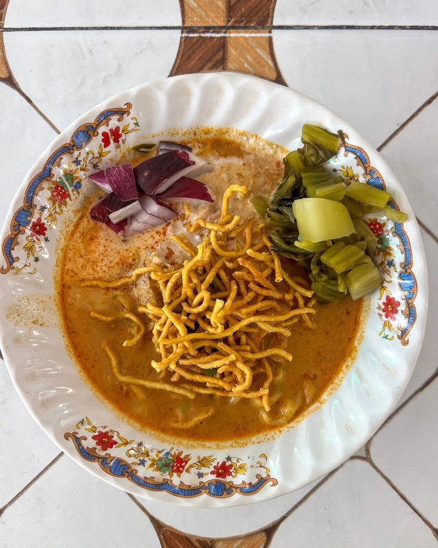
What to order: Khao soi gai (chicken) — their signature. Rich, thick broth with a whole braised chicken leg. The crispy noodle topping is perfectly fried. Ask for extra chili oil on the side if you like heat. Pair with pickled mustard greens and a squeeze of lime.
"Khao Soi Khun Yai — first choice! So yummy."
— r/chiangmai · Khao soi thread
"One more +1, Khao Soi Khun Yai near Chang Phueak Gate was hands down the best I had."
— r/travel · Chiang Mai food thread
tabiji verdict: The single most recommended khao soi on Reddit, full stop. Multiple threads, multiple years, always comes up. The broth is thick and unapologetically rich — this is what khao soi is supposed to taste like. Go before 11 AM or risk them selling out.
💰 60–80 THB
📍 Hai Ya district, south of Old City
⏰ ~9 AM–2 PM
📌 Google Maps →
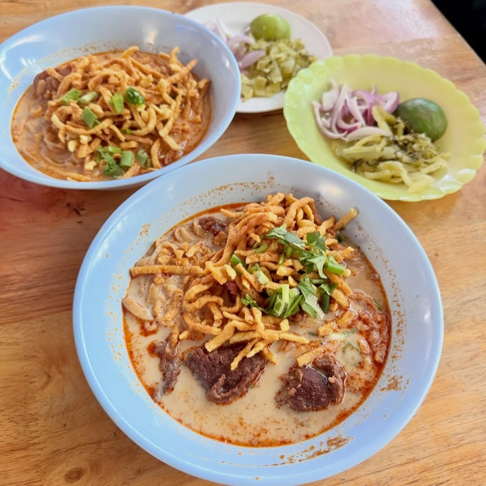
What to order: XL beef khao soi — the specialty. Enormous portion with tender, slow-cooked beef chunks. Featured on Netflix's "Somebody Feed Phil." The broth is deeply spiced with a thick, velvety coconut base. Get the XL; you won't regret it.
"Khao Soi Luang Prakit Kad Kom in Hai Ya — famous among Thais and sometimes visited by politicians."
— r/chiangmai · Favourite Khao Soi thread
tabiji verdict: Where the Thais eat. When a khao soi shop is "famous among Thais and visited by politicians," you know it's the real deal. The beef XL is a mountain of food for under 100 baht. Less touristy than the Old City spots — worth the short ride south.
💰 50–70 THB
📍 Huay Kaew Road, near Chiang Mai University
⏰ ~9 AM–3 PM
📌 Google Maps →
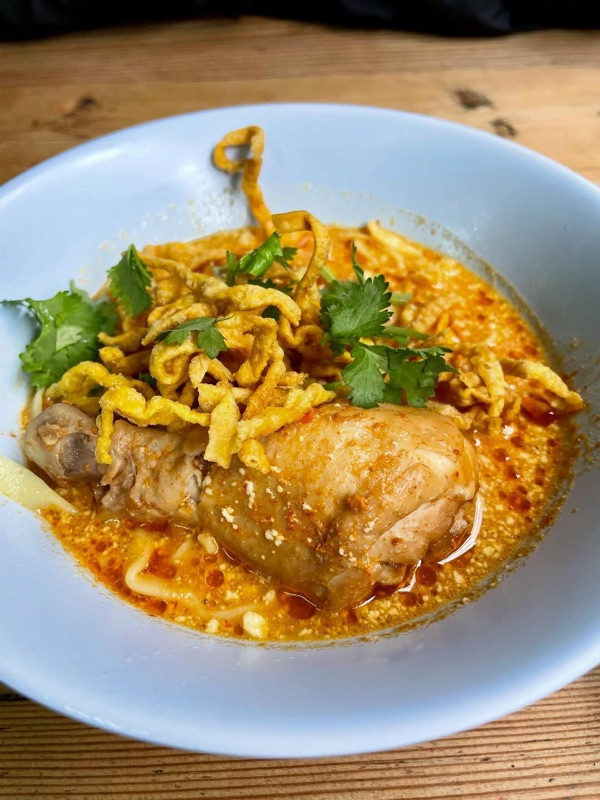
What to order: Chicken khao soi — the classic preparation. Straightforward, no-frills, perfectly executed. The broth has an earthy depth that sets it apart. Good condiment spread on the table. Pair with a side of pickled cabbage.
tabiji verdict: The "tried them all, this one wins" pick. When someone says they've eaten khao soi at every shop in town and keeps coming back here, that's the strongest endorsement possible. Arrive before 12:30 PM to avoid the wait.
💰 50–70 THB
📍 Near City Hall, north Chiang Mai
⏰ ~8:30 AM–2 PM
📌 Google Maps →
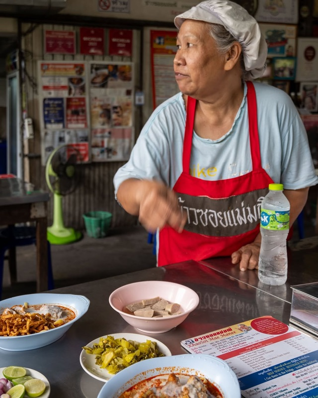
What to order: Either chicken or beef — both excellent. The broth is milder than Khun Yai (less upfront spice), but you can customize with chili oil at the table. Good for spice-sensitive eaters who still want authentic flavor.
"We go there for beef Khao soi. It's not as spicy as Khao Soi Khun Yai. But you can add chilli oil."
— r/chiangmai · Khao Soi discussion
tabiji verdict: The "adjust to your spice level" option. The base broth is milder, which some people actually prefer — it lets the coconut and spice complexity shine through without overwhelming heat. A bit out of the tourist zone near City Hall, which keeps the crowds manageable.
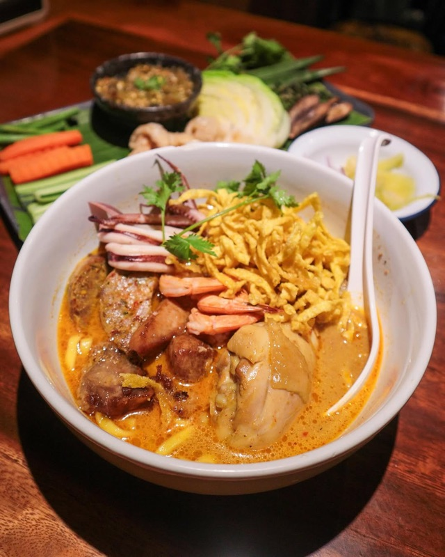
What to order: Khao soi gai plus their floral drinks and other Northern Thai dishes like Nam Phrik Num (green chili dip). A good spot to try multiple Lanna dishes in one sitting. More of a restaurant experience than a street stall.
"I would also recommend Nimman to tourists for the floral drinks and other Northern Thai dishes like Nam Phrik Num."
— r/chiangmai · Favourite Khao Soi thread
tabiji verdict: Yes, it's tourist-heavy. Yes, it's pricier. But Reddit expats admit the khao soi actually delivers — the broth is thick and well-spiced, and the broader Northern Thai menu makes it a great one-stop introduction to Lanna cuisine. Just don't pretend it's a hidden gem.
💰 50–70 THB
📍 Doi Pui Village (up the mountain past Doi Suthep)
⏰ Lunch hours only
📌 Google Maps →
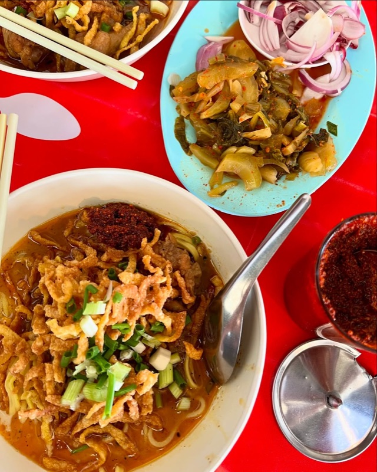
What to order: Chicken khao soi — the only thing on the menu, and it's perfect. Eat it in a Hmong hill tribe village with mountain views. Combine with a visit to Doi Suthep temple on the way up. The drive alone is worth it.
"I second this. Best I've had. Totally worth the trip up the mountain."
— r/chiangmai · reply
tabiji verdict: The most unique khao soi experience on this list. A tiny stall in a Hmong village on Doi Pui mountain — about 30 minutes past Doi Suthep temple. The khao soi is exceptional and the setting is unforgettable. Combine it with a temple visit for a perfect half-day trip.
💰 50–80 THB
📍 Charoen Rat Road, Faham area (east of Old City)
⏰ ~8 AM–3 PM
📌 Google Maps →
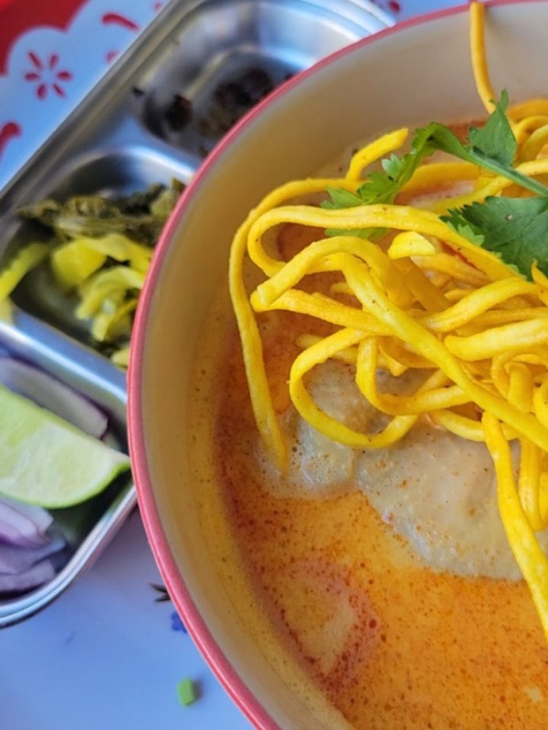
What to order: Chicken khao soi — the dish that made them famous. They've been serving it for decades. Also try the khao soi with pork ribs if available. The condiment plate here is generous.
tabiji verdict: The most famous khao soi in Chiang Mai — every guidebook recommends it. The honest Reddit take? It's good, not great. Multiple expats say the broth has been "watered down" over the years. Still worth trying once for the history, but don't make it your only khao soi stop. The OG's who've been eating here for a decade notice the difference.
💰 50–70 THB
📍 Charoen Prathet Road, near Night Bazaar
⏰ ~9 AM–4 PM
📌 Google Maps →
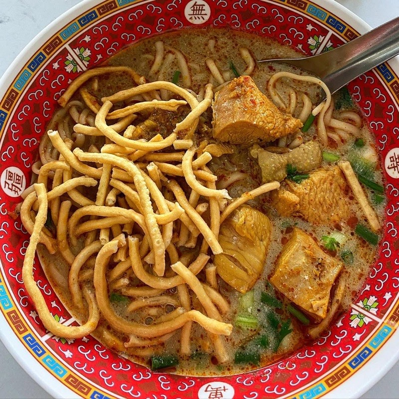
What to order: Beef khao soi — the Muslim-style preparation uses beef instead of chicken, with a slightly different spice profile. The broth leans more toward the Burmese-influenced roots of the dish. Good for halal-observant travelers.
tabiji verdict: Polarizing. It's one of the oldest khao soi shops in Chiang Mai and makes every guidebook, but Reddit opinion is mixed. The Muslim-style preparation is genuinely different — less coconut-forward, more spice-driven. If you want halal khao soi, this is the go-to. If you want the classic coconut-rich version, look elsewhere on this list.
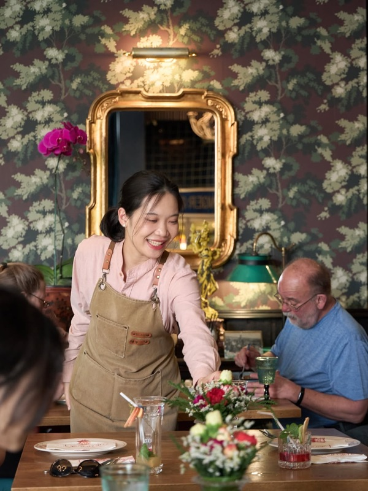
What to order: Khao soi gai — uses premium ingredients with 3x the usual amount of chicken. Beautiful colonial-era house setting. Full restaurant menu with Northern Thai and international dishes. Air-conditioned. A proper sit-down experience.
"Tried The House by Ginger. Soup has great balanced flavour and it has 3x the usual amount of chicken."
— r/chiangmai · Best khao soi gai joint thread
tabiji verdict: The "treat yourself" khao soi. At 3–5x the street price, it better be good — and Redditors say it delivers. The extra chicken, balanced broth, and beautiful setting justify the premium. Perfect for when you want khao soi with air conditioning and a cocktail list.
💰 50–80 THB
📍 Chiang Mai (separate location from Mae Manee #1)
⏰ ~9 AM–2 PM
📌 Google Maps →
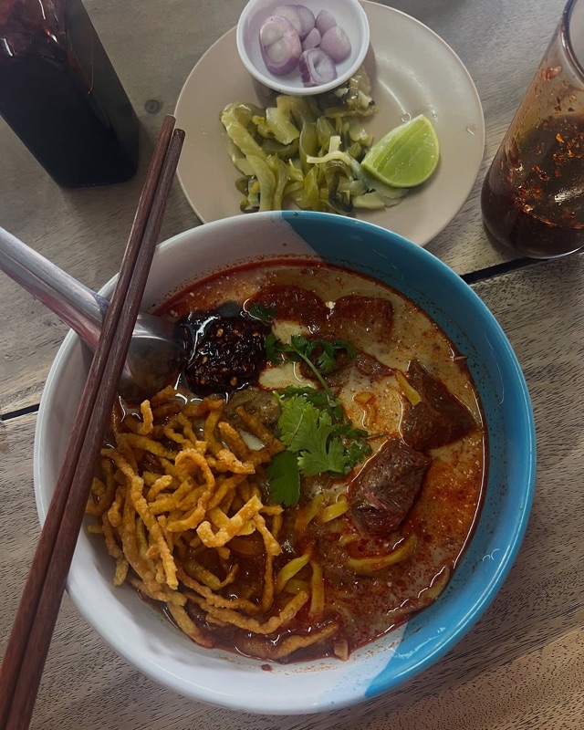
What to order: Beef khao soi — the star here. Massive portions with tender braised beef. More robust and spicy than Mae Manee #1. One bowl is a full meal that will genuinely fill you up, unlike some popular spots where you could eat two bowls.
"I really like the beef one from Khao Soi Mae Manee 2. One bowl is a full meal that will fill you up, unlike some other popular places where you could eat two bowls."
— r/chiangmai · Khao soi thread
tabiji verdict: The "big appetite" pick. If you've been to other khao soi spots and left hungry, Mae Manee 2 fixes that problem. The beef version is the move — enormous portion, robust spicing, genuinely filling. Related to Mae Manee #1 but a different experience.
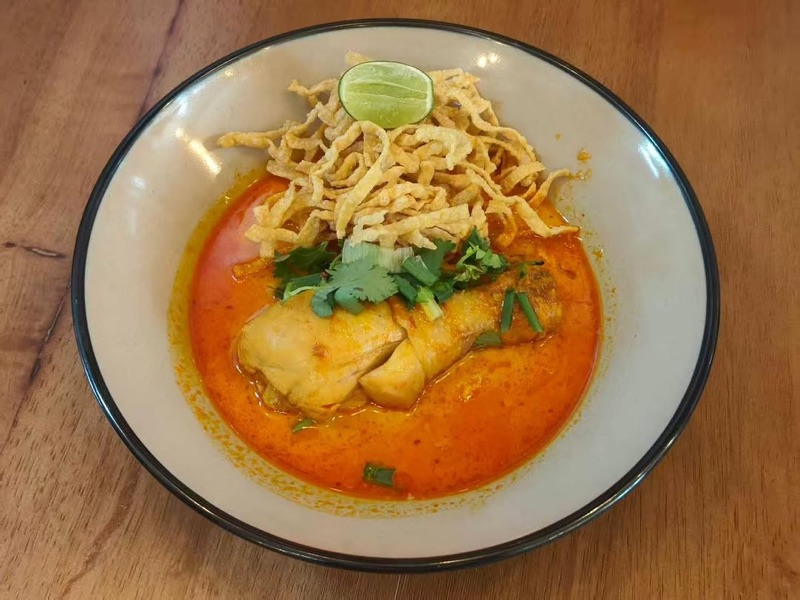
What to order: Chicken khao soi — simple, well-executed. The riverside location adds charm. A good spot to combine with activities along the Mae Ping River. Less crowded than the famous names.
tabiji verdict: The riverside khao soi. Not on any tourist radar, just a solid local spot near the Mae Ping River. Perfect if you're in the area for river activities or staying on the east side of town. Sometimes the best meals are the ones you stumble into.
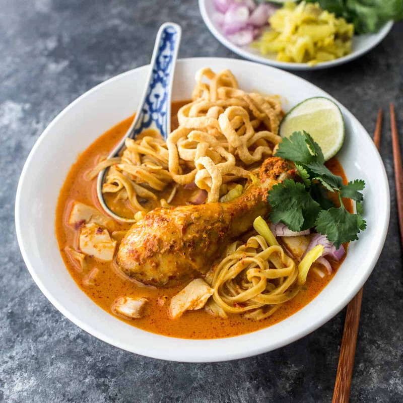
What to order: Beef khao soi — yes, at a biryani shop. Sounds wrong, tastes incredible. Only 60 THB. Also try their chicken biryani while you're there. The Muslim-influenced cooking gives their khao soi a unique depth.
"Try from ร้านข้าวหมกไก่ชากีล่า (Shakilar Chicken Briyani) … their beef Khao Soi is fantastic and only 60฿."
— r/chiangmai · Favourite Khao Soi thread
tabiji verdict: The wildcard pick. A biryani shop with fantastic khao soi for 60 baht? This is the kind of recommendation you only get from locals who actually know the city. The Muslim-influenced cooking adds a unique spice dimension you won't find at the standard shops.
💰 60–80 THB
📍 Doi Saket (20 min east of Chiang Mai)
⏰ Lunch hours
📌 Google Maps →
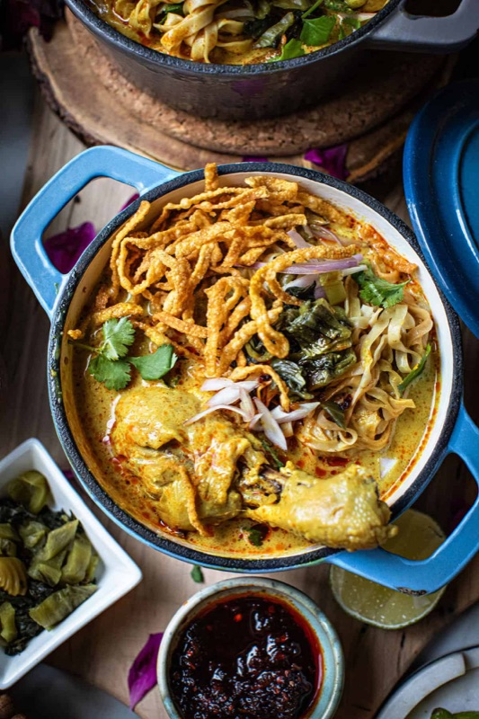
What to order: Khao soi — the signature dish at a place literally named after soup. Slightly outside the city but worth the trip for serious khao soi enthusiasts. The rural setting and quieter pace are part of the appeal.
"Khao soi at Auntie Cat's in Doi Saket is my favorite by a mile."
— r/chiangmai · Khao Soi discussion
tabiji verdict: "My favorite by a mile" is a bold claim in a city with this much khao soi competition. Located in Doi Saket, about 20 minutes east — best paired with a day exploring the countryside. Not convenient for Old City tourists, but serious noodle hunters will be rewarded.
💰 40–60 THB
📍 Chiang Mai Gate market area
⏰ Morning market hours (~6 AM–1 PM)
📌 Google Maps →
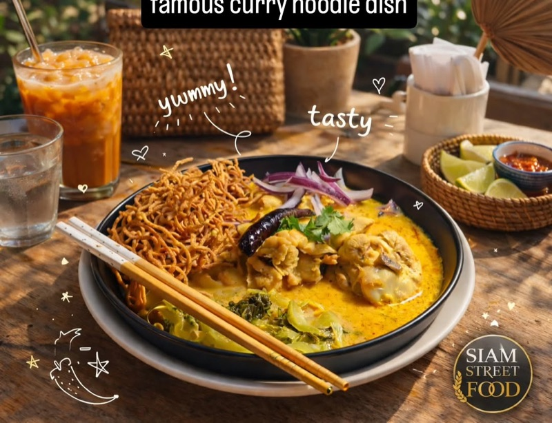
What to order: Chicken khao soi from the stalls in the market area. Multiple vendors serve it — look for the one with the longest local queue. The morning market here is one of Chiang Mai's best food experiences regardless. Grab khao soi, mango sticky rice, and fresh fruit.
"I like the one at Chiang Mai Gate. Someone added it to Google Maps as 'best khao soi chiang mai.'"
— r/ThailandTourism · Best Khao Soi thread
tabiji verdict: The cheapest khao soi experience on this list, in one of Chiang Mai's most vibrant morning markets. No English sign, no Instagram fame — just good noodles at honest prices. Someone literally named the Google Maps pin "best khao soi chiang mai" and that's the kind of grassroots endorsement money can't buy.
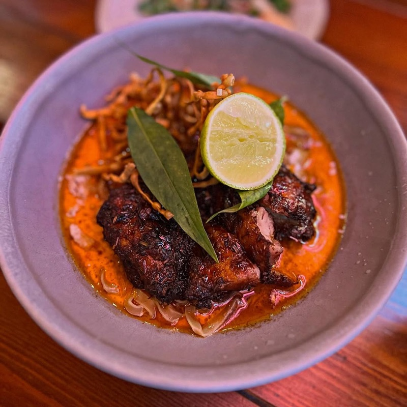
What to order: Khao soi with customization options — they let you choose spice level, protein, and noodle type. More of a restaurant experience with higher prices but lots of flexibility. Good for groups with different preferences.
"Khao Soi Lung Prakit Kad Kom, Khao Soi Maesai, Khao Soi Islam, Khao Soi Mae Manee, Khao-So-i, Kao Soy Nimman. The last two are pricier on account of being more restaurant-like than the others but almost every single one hits the spot."
— r/chiangmai · Khao Soi thread
tabiji verdict: The customizable option. At 99–180 THB it's pricier than street stalls, but you get air conditioning, an English menu, and the ability to dial in your exact preferences. Good for khao soi newbies who want training wheels, or when you need a break from plastic chairs in the heat.
Frequently Asked Questions
How much does a bowl of khao soi cost in Chiang Mai?
A bowl at a street stall or local shop costs 50–80 THB ($1.50–$2.30 USD). Upscale restaurants like The House by Ginger charge 180–350 THB ($5–$10). Even at the priciest spots, khao soi remains one of the best-value meals in Southeast Asia.
What is the difference between chicken and beef khao soi?
Chicken khao soi (khao soi gai) is the most traditional — a whole braised chicken leg in coconut curry broth with egg noodles. Beef khao soi (khao soi neua) uses slow-cooked beef chunks with a richer, heartier flavor. Reddit consensus: try chicken first for the classic experience, then beef at places like Mae Manee 2 or Lung Prakit.
When is the best time to eat khao soi in Chiang Mai?
Most traditional shops open around 8–9 AM and close by 2–3 PM or when they sell out. Lunch rush is 11 AM–1 PM. For popular places like Khao Soi Khun Yai and Lung Prakit, arrive before 11 AM to avoid lines. Some shops close on Sundays.
Is khao soi spicy?
Khao soi has a mild-to-medium spice level by Thai standards. The coconut milk tames the heat significantly. Most shops provide condiments (chili oil, pickled mustard greens, shallots, lime) so you can adjust. If you're spice-sensitive, try Khao Soi Mae Manee — it has a milder base with chili oil on the side.
Which khao soi place do Chiang Mai locals actually eat at?
According to Reddit expats, Khao Soi Lung Prakit Kad Kom is the top local favorite — famous among Thais and visited by politicians. Khao Soi Khun Yai and Mae Manee are also heavily local. Tourist-heavy spots like Lamduan and Nimman are still good, but expats gravitate toward the smaller, less-photographed shops.